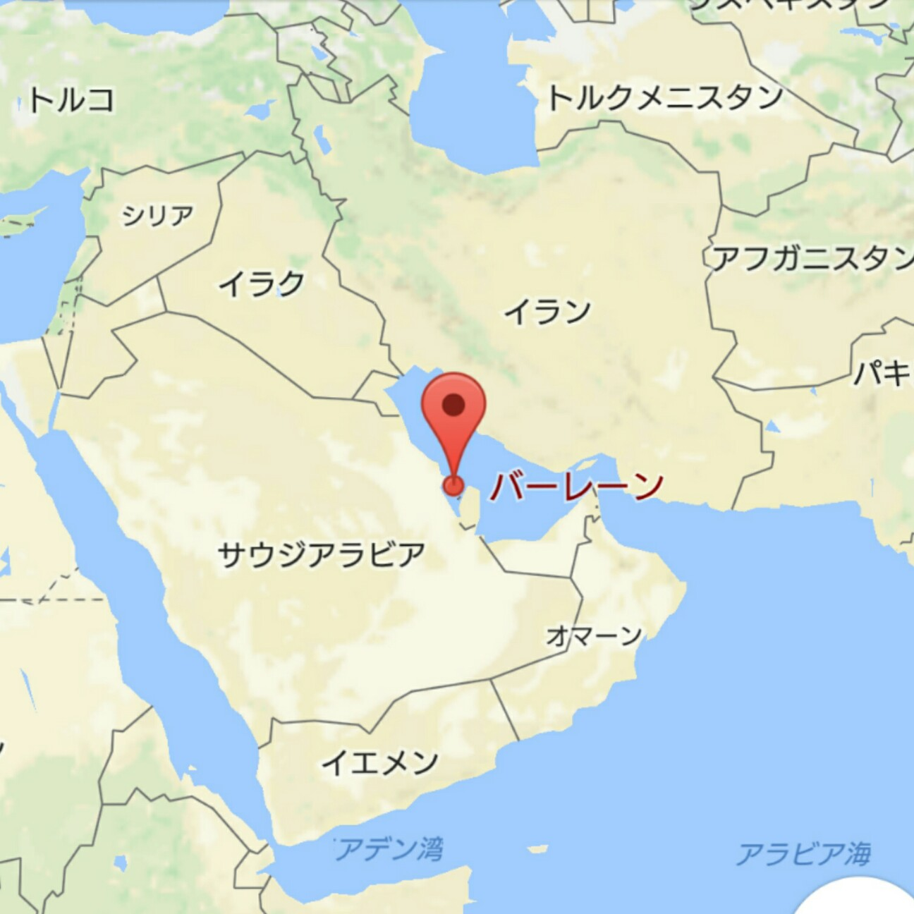
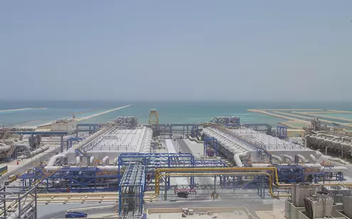
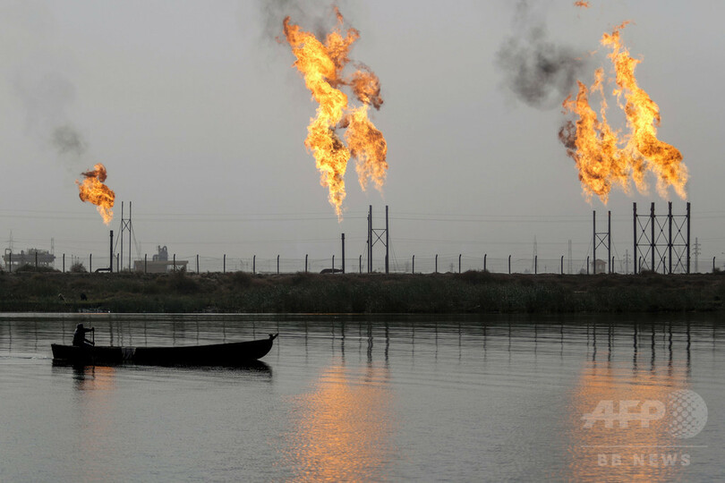
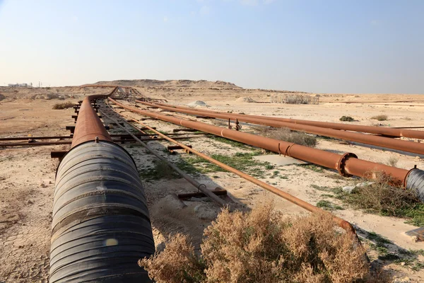
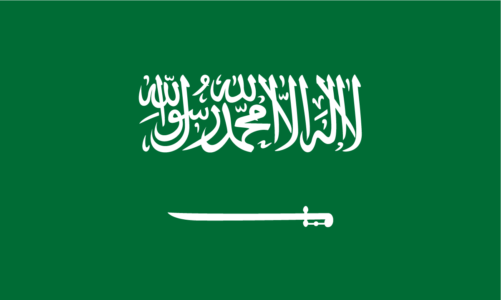
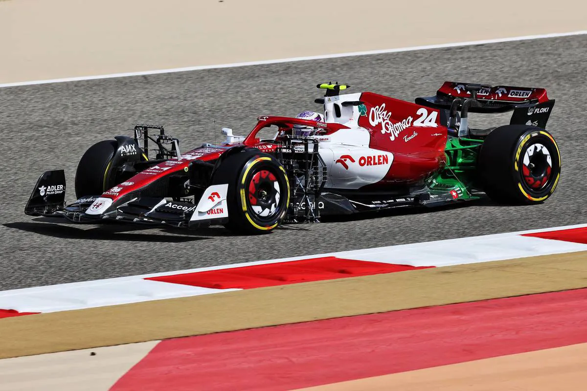
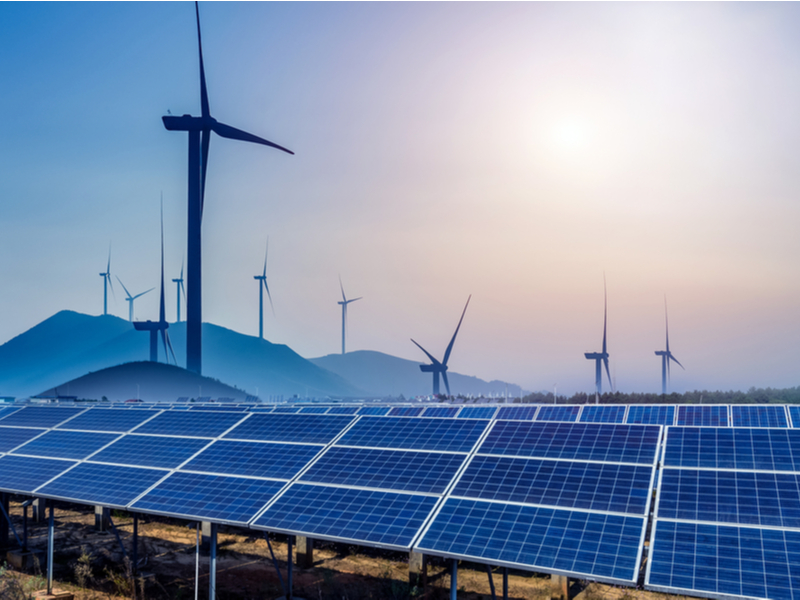

バーレーン
○バーレーンの位置と分布○
バーレーンは、中東のペルシャ湾に位置する島国です。サウジアラビアの東側に位置し、カタールの南西に接しています。国土は主にバーレーン島とその周辺のいくつかの小島から構成されています。
○バーレーンの地形と気候○
地形
主にバーレーン島と数十の小さな島々から成り立っています。国土のほとんどは平坦な砂漠地帯で、高地はほとんどありません。最高地点は約134メートルで、バーレーン島の中心部に位置しています。地形は主に砂丘と乾燥した平野から成り、少数の地下水脈が存在します。

気候
バーレーンの気候は典型的な砂漠気候で、年間を通じて非常に乾燥しています。夏は非常に暑く、気温は35℃から40℃に達することが多いです。冬は比較的温暖で、日中の気温は18℃から24℃程度です。降水量は年間を通じて非常に少なく、平均的に100ミリメートル未満です。湿度は特に夏に高くなる傾向があります。

○人間と自然の相互依存関係○
自然環境の影響
バーレーンの乾燥した気候と限られた降水量は、農業や水資源の利用に大きな影響を与えています。人々は地下水や海水淡水化プラントを活用して水を確保し、乾燥に強い作物を栽培しています。また、熱帯性の植物や海洋資源が生活に欠かせない要素となっており、これらは持続可能な管理が求められます。
人間活動の影響
都市化や産業活動は、土地の利用や環境に大きな影響を与えています。石油産業は経済の中心であり、環境に対する圧力を増大させています。また、海洋汚染や砂漠化の進行が懸念されています。これに対処するために、再生可能エネルギーの導入や環境保護の取り組みが進められています。
○バーレーンの国際的な関係性○
経済的つながり
バーレーンは石油産業に依存しており、主要な貿易相手国にはサウジアラビア、アメリカ、アラブ首長国連邦（UAE）が含まれます。石油やガスの輸出はバーレーンの経済の重要な部分であり、これらの国々との経済的な結びつきが強いです。また、バーレーンは金融サービス業を推進しており、多くの国際銀行や投資家が拠点を置いています。
政治的つながり
バーレーンは中東地域の政治的な動向に密接に関わっています。湾岸協力会議（GCC）のメンバーとして、地域の安定と協力を推進しています。サウジアラビアとは特に強い政治的な結びつきがあり、安全保障や経済政策で協力しています。また、アメリカとの戦略的パートナーシップもあり、防衛や安全保障の面で密接な関係を持っています。
文化的つながり
バーレーンは多文化社会であり、異なる国からの移民が多く住んでいます。これにより、文化的な交流が盛んで、インド、パキスタン、レバノンなどの文化的影響が見られます。バーレーンは観光業も発展しており、国際的な文化イベントやフェスティバルが開催され、他国との文化的なつながりが強化されています。
環境的なつながり
バーレーンは気候変動や環境問題に対して国際的な協力を重視しています。特に中東地域の環境保護活動や持続可能な開発目標（SDGs）に積極的に参加しており、国際的な環境保護プロジェクトや協定に貢献しています。また、地域の他の国々と協力して水資源の管理や再生可能エネルギーの導入を進めています。
○バーレーンの特徴と他地域との比較○
地理的特徴
バーレーンはペルシャ湾に浮かぶ島国で、主に平坦な砂漠地帯で構成されています。これは、山岳地帯や森林が多い他の中東地域とは異なります。例えば、サウジアラビアやイランは広大な砂漠地帯を持つ一方、バーレーンは比較的小さな島であり、地形的に平坦です。
気候
バーレーンは典型的な砂漠気候で、年間を通じて高温かつ乾燥しています。これに対し、隣国のアラブ首長国連邦（UAE）やサウジアラビアも同様の気候ですが、バーレーンは降水量がさらに少なく、湿度が高いことが特徴です。例えば、ドバイ（UAE）も乾燥していますが、バーレーンの方が降水量が少なく、湿度が高い傾向があります。
経済
バーレーンは石油資源に依存していますが、金融サービス業にも力を入れています。他の中東の産油国（例：サウジアラビア）と比較して、バーレーンは石油以外の経済分野、特に金融業や観光業に重点を置いています。また、サウジアラビアのように広大な石油埋蔵量を持っているわけではありません。
文化と社会
バーレーンは多文化社会であり、異なる国からの移民が多く住んでいます。これに対し、他の中東諸国（例：サウジアラビアやイラン）は、より均一な文化や宗教的背景を持つ傾向があります。バーレーンでは多様な文化や国際的な交流が盛んで、社会的な多様性が強調されています。
○バーレーンのSDGsへの主な取り組み○
再生可能エネルギー（目標7）
バーレーンは、再生可能エネルギーの導入に特に力を入れています。政府は「バーレーン2030ビジョン」に基づき、クリーンエネルギーの利用促進を掲げています。具体的には、ソーラーエネルギーのプロジェクトや風力発電の導入を進め、エネルギーの多様化を図っています。これにより、持続可能なエネルギー供給を目指しています。
